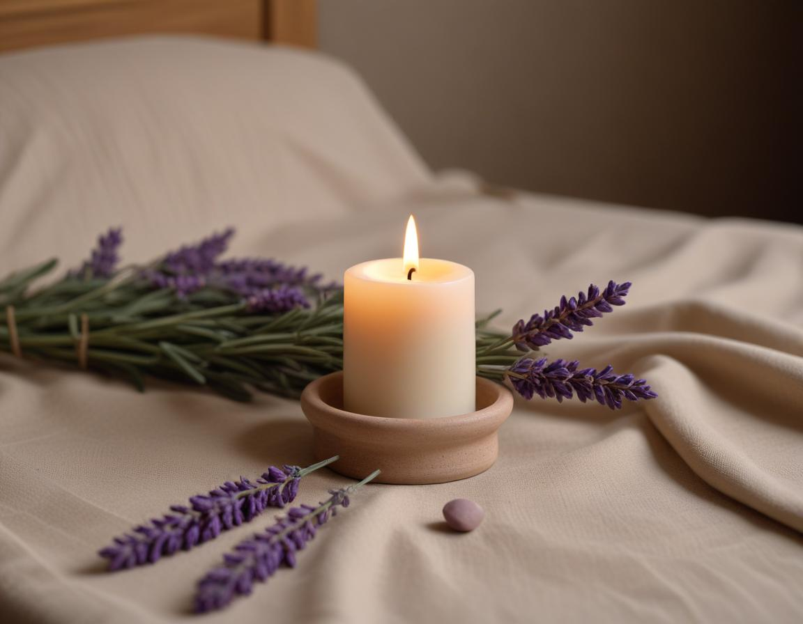

건강 칼럼 · 한방신경정신과
시험장에서 머리가 하얘진다면,
시험불안 한방 관리 가이드

시험불안이란 무엇인가요?
시험을 앞두고 어느 정도 긴장하는 것은 자연스럽고, 적당한 긴장은 집중에 도움이 되기도 합니다. 문제는 긴장이 지나쳐 아는 문제도 떠오르지 않거나, 시험 며칠 전부터 잠과 식사가 무너지는 경우입니다. 국가정신건강정보포털은 불안이 일상 기능을 방해할 정도로 커지면 도움을 받아 볼 것을 안내하고 있습니다. 수능·내신을 앞둔 학생뿐 아니라 공무원·자격증 시험, 승진 시험을 준비하는 성인에게도 흔히 나타납니다.
시험불안은 어떤 신호로 나타날까요?
- 몸: 가슴 두근거림, 손 떨림과 식은땀, 시험 당일 복통이나 잦은 화장실
- 잠: 시험 전날 잠들기까지 오래 걸리고, 자주 깨거나 악몽을 꿈
- 생각: "망치면 끝"이라는 생각이 반복되고, 시험지를 받으면 머리가 하얘짐
- 행동: 공부를 미루거나, 반대로 쉬지 못하고 같은 부분만 반복함
이 가운데 두세 가지가 시험 때마다 되풀이된다면 체계적으로 관리해 볼 시점입니다.
한의학에서는 시험불안을 어떻게 보나요?
한의학은 같은 불안이라도 몸의 상태에 따라 원인을 다르게 봅니다. 작은 일에도 쉽게 놀라고 가슴이 뛰는 경우는 심담허겁(心膽虛怯), 긴장하면 명치가 답답하고 한숨이 잦은 경우는 간기울결(肝氣鬱結), 오래 공부해 지치고 입맛과 잠이 함께 떨어진 경우는 심비양허(心脾兩虛)로 구분해 접근합니다. 진찰에서 이 차이를 확인해야 치료 방향이 정해집니다.
한의원 시험불안 치료는 어떻게 진행되나요?
1. 침 치료
손목의 신문(神門), 팔 안쪽의 내관(內關), 정수리의 백회(百會) 등 긴장 조절에 쓰이는 혈자리를 중심으로 시술합니다. 해외 의대생 대상 무작위 대조 연구에서도 시험 전 귀침이나 신문혈 자극 후 시험불안 점수가 낮아졌다는 결과가 보고된 바 있습니다.
2. 약침
한약에서 정제한 약액을 혈자리에 소량 주입하는 방법입니다. 목·어깨가 굳고 두통이 동반되는 수험생처럼 긴장이 근육으로 쌓인 경우에 침 치료와 함께 활용합니다.
3. 한약
체질과 증상에 맞춰 처방합니다. 예를 들어 지친 몸과 불면이 함께 있으면 귀비탕 계열, 놀람과 두근거림이 두드러지면 온담탕 계열을 바탕으로 가감합니다. 시험 일정에 맞춰 복용 기간을 정하고, 복용 중 불편이 있으면 바로 조정합니다.
시험 전 집에서 해 볼 수 있는 관리 방법은?
- 4초 들이쉬고 6초 내쉬는 호흡을 3분간 반복해 보세요. 시험 시작 직전에도 할 수 있습니다.
- 시험 1주 전부터는 실제 시험 시간에 맞춰 기상과 공부 시간을 맞춥니다.
- 시험 당일 아침에는 기름진 음식과 과도한 카페인을 피합니다.
- 엄지와 검지 사이 합곡혈이나 손목의 신문혈을 30초씩 지그시 눌러 줍니다.
자주 묻는 질문 Q&A
- Q1. 시험불안 한방 치료는 시험 며칠 전부터 시작하면 좋나요?
- 몸이 적응할 시간을 고려하면 시험 3~4주 전에 상담을 시작하는 편이 여유롭습니다. 시험이 임박했다면 침 치료 위주로 긴장을 조절하는 방향을 함께 정합니다.
- Q2. 한약을 먹으면 졸리거나 집중력이 떨어지지 않나요?
- 시험불안 한약은 진정만을 목표로 하지 않고 수면과 소화, 두근거림을 함께 고려해 처방합니다. 복용 중 졸림 같은 불편이 느껴지면 바로 알려 주시면 처방을 조정합니다.
- Q3. 침이 무서운 학생도 치료받을 수 있나요?
- 얇은 침을 적은 개수로 시작하고, 부담이 크면 귀 지압처럼 자극이 적은 방법을 먼저 안내합니다.
- Q4. 정신건강의학과 진료와 함께 받아도 되나요?
- 가능합니다. 복용 중인 약이 있다면 이름을 알려 주시면 한약 처방 시 함께 고려합니다.
- Q5. 어떤 경우에는 다른 진료가 먼저 필요한가요?
- 시험과 관계없이 불안이 몇 달 이상 이어지거나, 공황 발작이 반복되거나, 스스로를 해치고 싶은 생각이 든다면 정신건강의학과 진료나 상담을 먼저 받으시길 권합니다.
참고 자료
- 국가정신건강정보포털, 불안장애 정보 — mentalhealth.go.kr
- Klausenitz C, et al. Auricular Acupuncture for Exam Anxiety in Medical Students: A Randomized Crossover Investigation. PLoS ONE, 2016. 원문
- Effects of single-point acupuncture (HT7) in the prevention of test anxiety: Results of a RCT. PMC6116988
- BMC Medical Education, 2023. 귀 지압의 시험불안 감소 효과 연구. 원문
※ 이 글은 일반적인 건강 정보이며, 개인의 상태에 따라 치료 방법과 결과는 다를 수 있습니다. 정확한 진단과 치료는 진료를 통해 결정됩니다. 침·약침 시술 후 드물게 멍, 통증 등이 생길 수 있습니다.